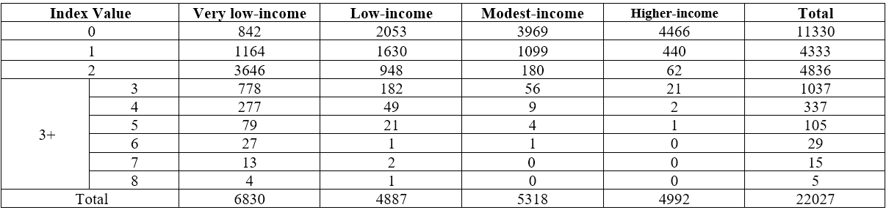
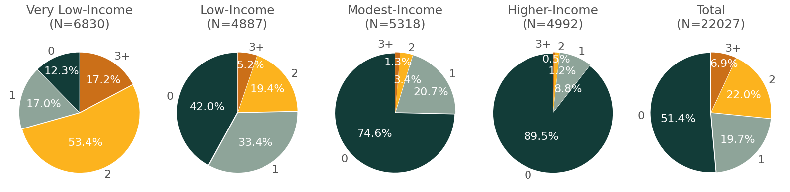
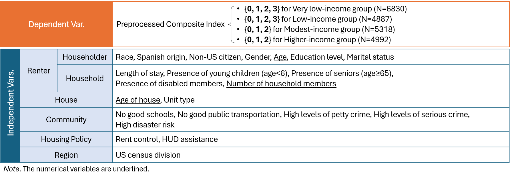
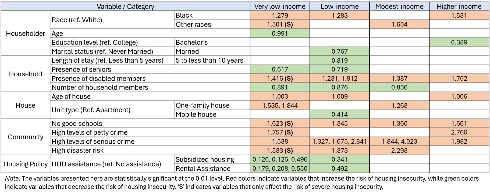
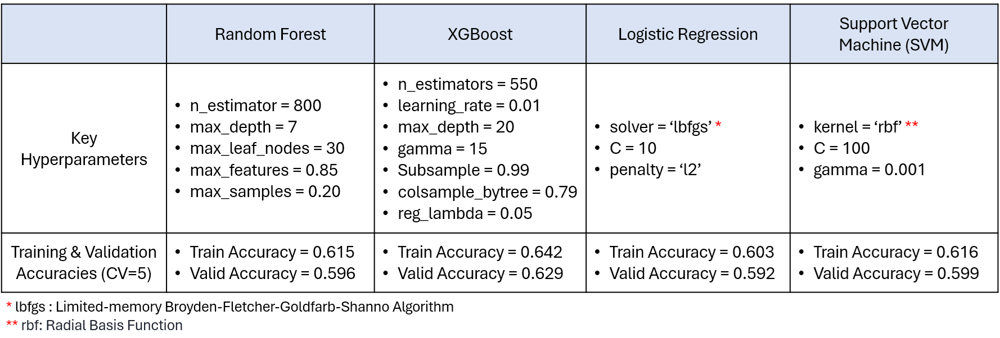
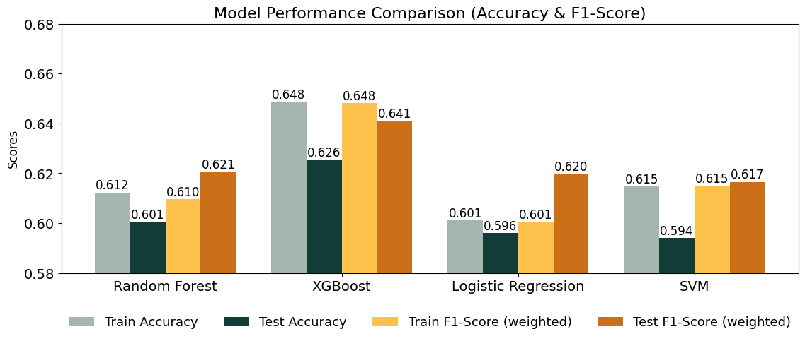
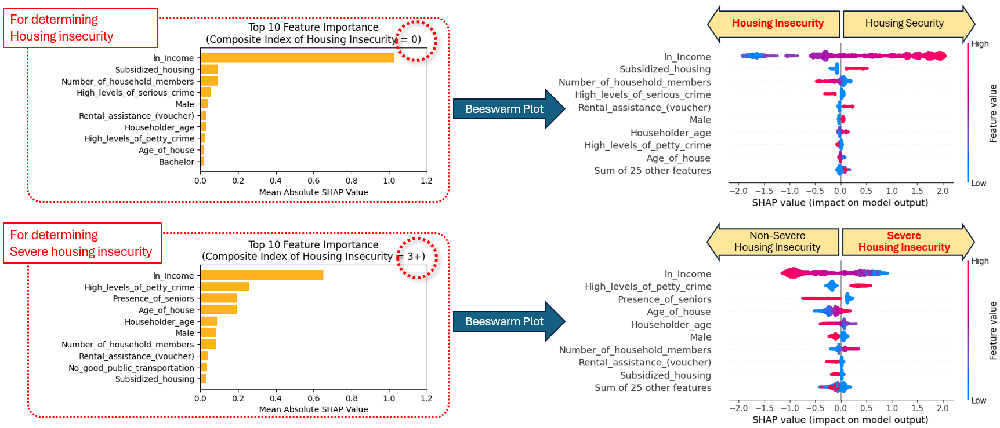

Who Faces Housing Insecurity:
An Analysis of Renters in U.S. Metropolitan Areas
Resources
For detailed results, references, and source code, please see:
-
Full Capstone Report:
Read Full Report
-
GitHub Repository:
View on GitHub
I. Introduction
A. Background
Resources
For detailed results, references, and source code, please see:
- Full Capstone Report: Read Full Report
- GitHub Repository: View on GitHub
Housing insecurity is a growing issue in U.S. metropolitan areas. 20% of renters in 25 major cities experience multiple forms of housing insecurity (e.g., forced moves, poor home conditions, high rent burdens). In recent decades, around 8 million very low-income renters are spending more than 50% of their income on rent, without any housing assistance. From 2022 to 2024, people experiencing homelessness rose rapidly from 582,462 to 771,480, after remaining steady for years. Metropolitan areas has particularly high rates of chronic homelessness. In short, renters in U.S. metropolitan areas, particularly those with low income, are increasingly vulnerable to housing insecurity.
B. Motivation and Goals
Renters often face multiple forms of insecurity, yet most research has focused on just one aspect. This research addresses the severity of housing insecurity by considering its multiple aspects. With this motivation in mind, the research goals are as follows:
- Examine the extent and severity of housing insecurity among renters in U.S. metropolitan areas
- Apply statistical and machine learning methods to identify renter characteristics that predict housing insecurity
- Inform policies that can improve renters’ housing security
C. Research Questions
- How extensive and severe is housing insecurity in U.S. metropolitan areas?
- What characteristics best represent renters facing housing insecurity?
- Do housing policies, such as subsidized housing and rental assistance, contribute to addressing housing insecurity?
- What characteristics best predict severe housing insecurity?
II. Dataset and Research Approach
A. Dataset
This research used the 2021 American Housing Survey (AHS) dataset. It can be directly downloaded from this link. The 2021 AHS dataset include a total of 64,141 housing unit. From this, I selected a sample of 22,027 housing units corresponding to renter households in metropolitan areas. I divided the sample into four income groups based on the 2021 federal poverty levels. Using annual income values for 100%, 200%, and 400% of the poverty levels, I have four income groups:
- Very low-income (N=6830)
- Low-income (N=4887)
- Modest-income (N=5318)
- Higher-income (N=4993)
B. Research Approach

III. Phase I: Explore Housing Insecurity Predictors
A. Select Housing Insecurity Predictors
From the AHS dataset, I selected several characteristics of renters (including householder and household characteristics), houses, and communities, along with housing policies and regions, as the predictors. The table below presents summary statistics for the variables (predictors) selected for the analysis.

B. Exploratory Data Analysis (EDA)


IV. Phase II: Create a Composite Index of Housing Insecurity
A. Determine Key Dimensions of Housing Insecurity
Based on a review of the existing literature, I determined key dimensions of housing insecurity as Residential Instability, Unfitness and Inadequacy, and Unaffordability

B. Create Indicators to Measure Housing Insecurity
To measure the key dimensions of housing insecurity, I selected several variables for each dimension from the 2021 AHS dataset and transformed them into nine binary indicators.

C. Factor Analysis to Validate Dimensions of Housing Insecurity
I conducted an exploratory factor analysis (EFA) to examine whether the underlying structure of the nine indicators aligns with the three dimensions of housing security. The EFA results confirm the three-dimensional structure is appropriate, with the nine indicators effectively representing the three dimensions. The scree plot support the adequacy of retaining three dimensions. Also, the high factor loadings of the nine indicators provide evidence for the validity of the three key dimensions they represent.

|

|
D. Create a Composite Index
I created the composite index of housing insecurity by summing all nine indicators. The values of this index range from 0 to 8. The higher the index value, the more severe the housing insecurity. A value of 0 means that a household faces housing security. A value of 1 or higher indicates housing insecurity, and a value of 3 or higher indicates severe housing insecurity.
E. Examine Extent and Severity of Housing Insecurity
Overall, 48.6% of renters face housing insecurity, including 22.0% who face two forms of housing insecurity (index value=2) and 6.9% who face severe housing insecurity (index value≥3). In the very low-income group, 87.7% face housing insecurity, including 53.4% who face two forms and 17.2% face severe housing insecurity. These findings highlight the strong relationship between income level and housing insecurity among metropolitan renters.
V. Phase III: Estimate Housing Insecurity Models Across Income Levels
A. Preprocessing
Due to the small number of observations for certain index values in the composite index of housing insecurity, values of 3 and higher were combined into a single value of 3 for the very low- and low-income groups. Similarly, for the modest- and higher-income groups, values of 2 and higher were combined into a single value of 2.
B. Establish Variables
C. Estimate Partial Proportional Odds (PPO) Models
I used a partial proportional odds model to estimate the impact of the predictors on housing insecurity across four income groups. This is an extended ordinal regression model that offers flexibility by allowing predictors to have varying effects across levels of housing insecurity.
D. Summary of the Four PPO Models
The table below shows relative risk ratios for statistically significant variables in PPO models.

VI. Phase IV: Build a Predictive Model for Housing Insecurity
A. Preprocessing
I combined all four renter groups to build a predictive model. I split the entire dataset (N=22027) into a training set (80%, N=17621) and a test set (20%, N=4406). To balance the composite index’s observations across classes, I applied Random Under-sampling and Synthetic Minority Over-sampling Technique Nominal and Continuous features (SMOTE-NC) to the training set. Before sampling, the class frequencies for the composite index of housing insecurity were: 9064 for class 0, 3869 for class 1, 3466 for class 2, and 1222 for class 3. After sampling, the frequencies were balanced to 3869 for each class, resulting in a total of 15476 observations in the training set
B. Establish Variables
The dependent variable is the Preprocessed Composite Index, where 3 and higher in the composite index of housing insecurity were grouped into a single value of 3. The independent variables are the same as in phase III, plus the 'ln_income' variable (the natural logarithm of the ‘Income’). the numerical variables (‘Householder’s age,’ ‘Number of household members,’ ‘ln_Income,’ and ‘Age of house’) were standardized.
C. Build Multiclass Classification Models
To build a predictive model for housing insecurity, I explored four multiclass classification models: Random Forest, XGBoost, Logistic Regression, and Support Vector Machine (SVM). I used 5-fold cross-validation to optimize hyperparameters.
D. Model Performance Comparison
Of all four models, XGBoost shows the best performance with the highest Test Accuracy (0.626) and Test F1-Score (0.641).
E. Feature Importance for the Best Model
I examined feature importance and beeswarm plots for XGBoost, the best-performing model, using SHAP (Shapley Additive exPlanations) values. SHAP is a method for explaining the output of machine learning models by quantifying the contribution of each feature to the model’s prediction. SHAP values are calculated based on Shapley values, which represent the weighted average of a feature’s marginal contributions across all possible subsets of features. This approach ensures scale-invariance, meaning that SHAP values prevent distortions and misinterpretations caused by scaling features.
Below are the plots for composite index values of 0 and 3+, which provide meaningful insights. The former illustrates the top 10 features that determine whether a household is doing well or facing housing insecurity, while the latter illustrates the top 10 features that determine whether a household is experiencing severe housing insecurity.
VII. Discussion and Conclusion
A. Discussion #1: How extensive and severe is housing insecurity in U.S. metropolitan areas?
In U.S. metropolitan areas, nearly half of all renters (48.6%) face some form of housing insecurity, with 6.9% facing severe housing insecurity. Among the very low-income group, 87.7% face housing insecurity, with 17.2% facing severe housing insecurity. Given the disproportionately high risk faced by the very low-income renters, policies need to prioritize this group (renters below the poverty level) to address their severe housing insecurity.
B. Discussion #2: What characteristics best represent renters facing housing insecurity?
Belonging to specific householder race groups (Black or other racial minorities), having disabled household members, and living in communities with no good schools or with high levels of serious crime are associated with a greater risk of housing insecurity at all income levels. Among lower-income renters (i.e., the very low- or low-income groups), unmarried householders, households without seniors or with fewer members, and those living in communities with high disaster risk are particularly vulnerable.
C. Discussion #3: Do housing policies contribute to addressing housing insecurity?
Subsidized housing and rental assistance significantly reduce the risk of housing insecurity among the very low- and low-income groups. These two housing policies are most effective for households on the brink of housing insecurity, rather than for those already facing it, particularly within the very low-income group. In this group, renters in subsidized housing face an 88.0% reduction in the relative risk of housing insecurity compared to housing security, relative to those with no assistance. Additionally, renters with rental assistance face an 82.1% reduction in the relative risk, relative to those with no assistance.

D. Discussion #4: What characteristics best predict severe housing insecurity?
Income is the most important characteristic in determining both housing security and severe housing insecurity. However, its importance decreases when determining severe housing insecurity compared to housing insecurity. Other renter and community characteristics (‘High levels of petty crime,’ ‘Presence (or absence) of seniors,’ ‘Householder age and gender,’ and ‘Number of household members’) contribute more to determining severe housing insecurity than to determining housing insecurity, even though their contribution is still lower than that of income. This suggests the possibility that renter and community characteristics play a crucial role in renters facing severe housing insecurity. To better understand the characteristics contributing to severe housing insecurity, future research should closely examine the household and community conditions of renters who are facing this issue.
E. Conclusion
This research examined housing insecurity among renters in U.S. metropolitan areas by employing statistical and machine learning approaches. This research highlights the value of analyzing housing insecurity by income level, as different income groups could face distinct challenges and vulnerabilities This research contributes to the housing studies literature by: (1) identifying key characteristics of renters facing housing insecurity, (2) informing the need for policies that prioritize very low-income renters, and (3) demonstrating the complementary use of statistical and machine-learning approaches.